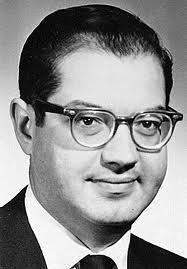
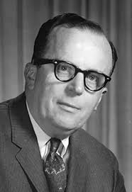
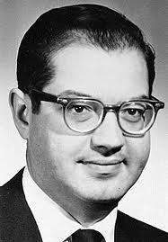

Donald Davies :

Paul Bruman :
Joseph Carl Robnett Licklider : J.C.R Licklider est un informaticien américain,il a eut un rôle particulièrement important dans la conception, |
|---|
Donald Davies : |
Paul Bruman :  |
|---|
Donald Davies et Paul Bruman ont tout deux informaticien,physicien et mathématicien et a deux ils ont coinventés la communication de paquetsAvant qu’internet existe les gens s’informaient en lisant le journal, en écoutant la radio ou en regardant la télévision en noir et blanc et s'il devait faire des recherches il aller à la bibliothèque et cela prenait du temps car on ne pouvait pas encore faire des recherches sur internet en bibliothèque cela prenait du temps (Wikipédia n’existait pas). Et pourquoi cela ? Car à la base il n'y avait que l'armée qui utilisait internet. Ils l'ont ensuite laisser accés aux monde entier |
|---|